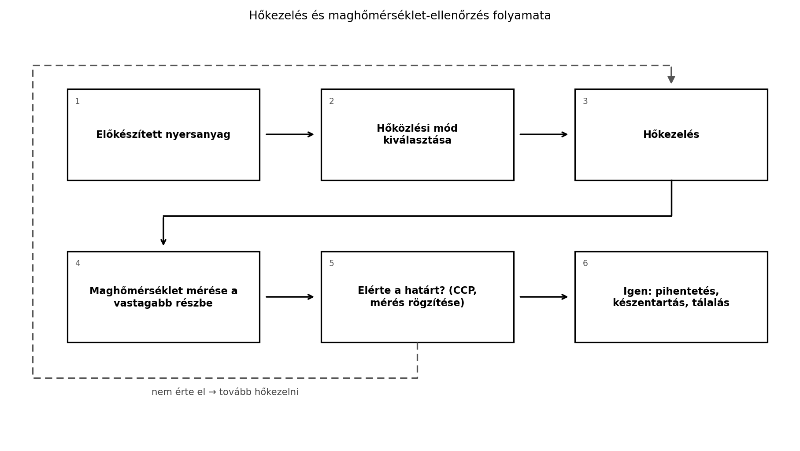

A konyhán reggelente gyakran előfordul, hogy a vendég visszaküld egy csirkemellet, mert a külseje szép barna, a belseje viszont még rózsaszín, hideg. A hús hőkezelése látszólag megtörtént, mégsem biztonságos az étel. Ilyenkor a szakácsnak nem elég ránéznie az ételre, és nem elég csak az órát figyelnie: azt is tudnia kell, hogyan jutott el a hő a hús belsejébe, és hogyan ellenőrizheti pontosan a készültséget. Ez a tudás nemcsak a minőség miatt fontos, hanem azért is, mert a nem megfelelő hőkezelés ételfertőzést okozhat. A hatósági ellenőrzés vagy a saját HACCP-rendszer is a maghőmérsékletet kérdezi elsőként: elérte-e az étel a biztonságos belső hőmérsékletet?
Képzelj el egy vastag csirkemellet forró serpenyőben. A felszíne hamar megpirul, mert közvetlenül érintkezik a forró fémmel. A hús belseje azonban lassabban melegszik: előbb a külső rétegek, majd percről percre a mélyebbek. Ha a szakács túl erős lángot használ, a felszín már megég, miközben a közepén még csak 40–50 °C van. A maghőmérséklet nem más, mint az étel legbelső, geometriai közepén mért hőmérséklet. Ez az az érték, amely megmutatja, hogy a hőkezelés elérte-e a célját.
Az alábbi ábra a hőkezelés általános folyamatát foglalja össze.

A folyamat lényege: a hőkezelés nem az utolsó lépés, hanem a maghőmérséklet mérésével kell igazolni a biztonságos készültséget. Ha a mért érték még alacsony, a hőkezelést tovább kell folytatni.
Definíció. A hőkezelés olyan konyhatechnológiai művelet, amelynek során az élelmiszert ellenőrzött hőmérsékletre melegítjük. Célja lehet a nyers anyag fogyaszthatóvá tétele, az állag és íz kialakítása, a mikrobák számának csökkentése vagy elpusztítása.
Definíció. A maghőmérséklet (core temperature) az étel legvastagabb, geometriai középpontjában mért hőmérséklet. A maghőmérsékletet mindig hőmérővel mérjük, mert a felszíni hőmérsékletből nem következtethetünk a belső állapotra.
A hő három klasszikus módon terjedhet, a konyhában pedig van egy negyedik, különleges mód is:
Szabály. Minden hőkezelő eljárásnál azt kell meghatározni, hogy melyik hőközlési mód viszi be a hőt, és hogyan lehet a maghőmérsékletet ellenőrizni. A felszíni sérülés, például a barnulás, önmagában nem bizonyíték arra, hogy az étel belseje is elérte a kívánt hőmérsékletet.
A hőkezelés során a nyersanyagok fő összetevői megváltoznak. A fehérjék denaturálódnak, vagyis elveszítik eredeti, biológiailag aktív térszerkezetüket, és a konyhában is ismert alvadás, kicsapódás következik be. Az izomfehérjék kb. 40–70 °C között denaturálódnak, ezért a hús fokozatosan merevedik, majd puhul. A tojásfehérje alvadási tartománya kb. 60–65 °C, a tojássárgája kb. 65–70 °C, a teljes tojás kb. 70–80 °C (ellenőrizendő: tankönyvi érték). A húsban lévő kötőszöveti fehérje, a kollagén, hosszú, nedves hőkezelés hatására kb. 80–100 °C-on zselatinná alakul (ellenőrizendő).
A keményítő forró vízben csirizesedik (keményítő-csirizesedés, angolul gelatinization): a keményítőszemcsék vizet vesznek fel, megduzzadnak, és az ételek besűrűsödnek. A csirizesedés jellemzően kb. 55–70 °C-on indul (ellenőrizendő: tankönyvi érték). A növényi rostok, például a zöldségek sejtfala, nedves hőkezelés hatására puhul, mert a pektin és a cellulóz szerkezete lazul. Ezért a zöldségfélék párolása vagy főzése mindig valamilyen nedves közegben történik.
Megjegyzés. A fehérjék hőmérsékleti viselkedését a Fehérjék alfejezet alapozza meg.
A hőkezelés a legtöbb konyhai HACCP-tervben kritikus szabályozási pont (CCP), mert ezen a ponton tudjuk elpusztítani vagy elégséges mértékben csökkenteni a kórokozó mikrobákat.
Jogszabály. Az élelmiszer-higiéniai rendelet (852/2004/EK) előírja, hogy a vállalkozónak HACCP-alapú eljárást kell működtetnie. A hőkezelés célja a veszélyes mikroorganizmusok elpusztítása, ezért a hőmérséklet-idő kombinációt a HACCP-tervben kell meghatározni, és a betartást méréssel kell igazolni. A konkrét maghőmérsékleti értékek üzemenként és nyersanyagonként eltérhetnek (ellenőrizendő: NÉBIH-útmutató / hatályos rendelet / HACCP-terv).
Kritikus pont. A hőkezelés CCP-jének elemei:
Allergén. A hőkezelés önmagában nem távolítja el az allergén összetevőket. A glutén, a tehéntejfehérje, a tojásfehérje vagy a hal allergénjei a főzés után is allergének maradhatnak. A hőkezelés nem teszi „allergénmentessé” az ételt; az allergén keresztszennyeződés kockázatát elkülönített nyersanyagokkal és eszközökkel lehet csökkenteni; allergénmentességet nem garantálunk.
A maghőmérséklet mérése akkor megbízható, ha a szakács a mérést szakszerűen, higiénikusan és következetesen végzi.
Higiénia. Tilos ugyanazzal a tisztítatlan szondával előbb nyers húst mérni, majd a kész ételbe szúrni. Ez keresztszennyeződést okoz. A szondát mérés előtt és után mindig fertőtlenítsd; ha sérült, repedt a szonda vagy a kábel, ne használd.
Az ábra felső sora a 3. és 5. lépés helyes megoldásait mutatja: a pontozott folt a „hideg mag”, a szonda hegyének ide kell jutnia. Az alsó sor négy tipikus mérési hibája mind hamis biztonságérzetet ad: a csont és a tepsi túl magas, a zsír és a felszín közeli réteg félrevezető értéket mutat. A HTML-kiadásban előbb magad döntsd el, melyik kép helyes, majd lapozz a magyarázatra.
A vastagabb húsdaraboknál a sütőből kivett étel maghőmérséklete még néhány percig emelkedhet. Ezt nevezzük utánsülésnek. A hús külső rétegei ugyanis forróbbak, és a hő tovább vezetődik a hidegebb belső mag felé. Ezért például egy egészben sült csirke maghőmérséklete a pihentetés alatt még néhány fokot emelkedhet; a 75 °C-os határt azonban a kivételkor vagy a pihentetés végén mérve igazolni kell – ha nem éri el, vissza kell tenni a sütőbe (ellenőrizendő: HACCP-terv).
A pihentetés élelmiszer-biztonsági szempontból is hasznos, ha a maghőmérséklet elérte a biztonságos értéket, és közben az étel nem hűl le a veszélyes hőmérsékleti zónába. A pihentetés arra is jó, hogy a húsban lévő nedvesség egyenletesebben oszoljon el, így szeleteléskor kevesebb lé folyik ki, az étel szaftosabb marad.
Szabály. Ha a hús a sütőből kivéve még nem érte el a HACCP-tervben előírt maghőmérsékletet, a pihentetés önmagában nem helyettesítheti a további hőkezelést. Az utánsütés csak akkor segíti a biztonságos készültséget, ha a hőmérséklet eléri a kritikus határt. Ha nem éri el, vissza kell tenni a sütőbe vagy tovább kell hőkezelni.
A grafikon egy egyszerű modellel számolt görbe, amelyet a lenti két számítási példához igazítottunk (nem mérés). A folytonos vonal a mag: a kivétel (függőleges vonal) után még néhány percig emelkedik, mert a forró külső réteg (pontozott vonal) tovább adja a hőt, majd hűlni kezd. Ebben a példában a csúcs a 75 °C-os tanulási határ (ellenőrizendő: HACCP-terv) alatt marad – a pihentetés tehát nem pótolja a további sütést. A HTML-kiadásban a kivételi maghőmérséklet és a pihentetési idő csúszkával változtatható, és az oldal kiszámolja az elért legnagyobb értéket.
Készentartás és visszahűtés. Ha az ételt nem tálalod azonnal, legalább 63 °C-on, legfeljebb 2 órán át tartsd melegen, vagy a főzés végétől 2 órán belül 20 °C alá, további 4 órán belül 5 °C alá hűtsd vissza (tanulási értékek, ellenőrizendő: NÉBIH-útmutató / HACCP-terv).
Továbbvitt eredmény. A maghőmérséklet mérésének szabályát – szúrás a vastagabb részbe, csont/zsír kerülése, fertőtlenítés, dokumentálás – használjuk a Nedves hőkezelések: főzés, gőzölés, buggyantás, párolás és az Egészben sütéssel és töltéssel készülő szárnyasételek alfejezetekben.
A hőkezelés során a maghőmérséklet változását egyszerű hőmérséklet-különbséggel is figyelemmel kísérhetjük. A következő számítások tanulási példák, mert a hőmérséklet-emelkedés a valóságban nem egyenletes.
1. számítási példa: átlagos hőmérséklet-emelkedés a sütés alatt
Adott: egy csirkemell maghőmérséklete a sütőbe helyezéskor 18 °C, 25 perc sütés után 60 °C.
Keresett: az átlagos hőmérséklet-emelkedés percenként.
Képlet:
Behelyettesítés:
Ellenőrzés: a kapott érték reális, mert a sütőben a maghőmérséklet néhány perc alatt több fokkal emelkedhet. A tényleges emelkedés a sütés elején gyorsabb, később lassul, ezért ez az érték csak tájékoztató átlag.
2. számítási példa: utánsütés a pihentetés alatt
Adott: egy egészben sült csirke maghőmérséklete a sütőből kivéve 68 °C, 8 perc pihentetés után 73 °C.
Keresett: az utánsütés során bekövetkezett összes és percenkénti hőmérséklet-emelkedés.
Képlet:
Behelyettesítés:
Ellenőrzés: ha az üzemi HACCP-terv szerinti biztonságos maghőmérséklet 75 °C (ellenőrizendő), akkor 8 perc pihentetés után (73 °C) még 2 °C hiányzik. Ha az emelkedés azonos ütemben folytatódna, körülbelül még szükséges. Ez azonban csak becslés, mert az utánsütés üteme lassul; a biztonságos készültséget mindig méréssel kell igazolni.
A hőkezelés minőségét érzékszervi és mérhető jellemzőkkel ellenőrizzük:
Hiba 1: „A külseje már szép, tehát kész.” A felszín megpirulhat anélkül, hogy a maghőmérséklet elérné a biztonságos értéket. Oka: túl erős láng vagy túl rövid idő. Helyes gyakorlat: mindig maghőmérsékletet mérj.
Hiba 2: A hőmérőt nem fertőtlenítik a mérés előtt és után. A szonda hordozhatja a nyers húsból származó baktériumokat, és keresztszennyeződést okozhat. Helyes gyakorlat: a mérőszondát minden mérés előtt és után fertőtleníteni kell.
Hiba 3: Csontba vagy zsírba szúrják a hőmérőt. A csont a hőt jól vezeti, és túl magas, a zsír pedig túl alacsony értéket adhat. Helyes gyakorlat: a szondát a legvastagabb izomrész közepébe kell szúrni.
Hiba 4: Mikrohullámú ételnél csak egy pontot mérnek. A mikrohullámú hőkezelés egyenetlen, a forró és hideg foltok miatt egyetlen mérés félrevezető lehet. Helyes gyakorlat: keverés után több ponton mérni.
Egy étteremben a szakács egészben sütött csirkét készített. A sütőben 45 percig sütötte, a bőre szép pirosra barnult. A séf megkérdezte, mi volt a maghőmérséklet, de a szakács azt felelte: „A külseje már jó, biztosan átsült.” A tálalás után a vendég visszaküldte az ételt, mert a comb tövénél a hús rózsaszín maradt. A HACCP-ellenőrzés során kiderült, hogy a CCP-lapon nem volt mérési adat, és a csirke maghőmérséklete csak 62 °C volt. Az ételt le kellett selejtezni. Tanulság: a hőkezelés kritikus pontján nem elég a felszíni jelekre hagyatkozni, a mérést és a dokumentálást minden tételnél el kell végezni.
Önellenőrzés – válaszok
1. feladat (A) Határozd meg a hőközlés négy módját, és adj mindegyikre egy-egy konyhai példát.
2. feladat (A) Csoportosítsd az alábbi eljárásokat aszerint, hogy melyik hőközlési mód dominál: főzés vízben, grillezés, légkeveréses sütőben sütés, serpenyőben pirítás.
3. feladat (B) Sorold fel a maghőmérséklet-mérés lépéseit a szonda előkészítésétől a dokumentálásig.
4. feladat (B) Egy sült hús maghőmérséklete a sütőből kivéve 70 °C, 10 perc pihentetés után 74 °C. Számítsd ki az utánsütés során bekövetkezett összes és percenkénti hőmérséklet-emelkedést.
5. feladat (C) Képzelj el egy HACCP-tervet egy csirkecomb sütésére. A kritikus határ 75 °C (ellenőrizendő). A szakács 70 °C-ot mér. Hogyan döntesz, és mit kell tennie a helyesbítő tevékenység során?
6. feladat (D) Egy vendég visszaküld egy töltött pulykamellet, mert a közepe rózsaszín. A szakács nem mért maghőmérsékletet, csak a sütő időzítőjére hagyatkozott. Elemezd a hibát: mi volt az ok, milyen veszélyt rejtett, és hogyan lehetett volna megelőzni?
1. feladat (A) Hővezetés: serpenyőben pirított hús; hőáramlás: vízben főtt burgonya; hősugárzás: grillcsirke; mikrohullám: melegített rizs mikrohullámú sütőben.
2. feladat (A) Főzés vízben: hőáramlás; grillezés: hősugárzás; légkeveréses sütő: hőáramlás; serpenyőben pirítás: hővezetés.
3. feladat (B) A lépések: 1. megfelelő digitális tűszondás hőmérő kiválasztása; 2. a szonda fertőtlenítése; 3. a legvastagabb rész közepébe szúrás; 4. stabil kijelzés kivárása; 5. több ponton mérés nagyobb daraboknál; 6. ismételt fertőtlenítés; 7. az érték dokumentálása.
4. feladat (B) ; . A 74 °C még a 75 °C-os tanulási határ (ellenőrizendő) alatt van: a hús nem adható ki, tovább kell hőkezelni, és újra mérni.
5. feladat (C) A 70 °C nem éri el a 75 °C kritikus határt, ezért a csirkecombot tovább kell hőkezelni. A helyesbítő tevékenység: vissza a sütőbe, néhány percenként ismételt maghőmérséklet-mérés, és csak a 75 °C elérése után tálalás. A mérést és a helyesbítést rögzíteni kell.
6. feladat (D) Tünet: a töltött pulykamell közepe rózsaszín. Ok: a szakács nem mért maghőmérsékletet, csak a sütési időt figyelte, a töltelék és a hús vastagsága miatt a hő nem érte el a biztonságos magot. Veszély: a töltött húsoknál a baromfi és a töltelék belsejében kórokozók maradhatnak. Megelőzés: a töltött pulykánál több ponton maghőmérsékletet kell mérni, és a HACCP-tervben rögzített értéket el kell érni; a mérést dokumentálni kell.
A hőkezelés során a hő négy módon juthat az ételbe: hővezetéssel, hőáramlással, hősugárzással és mikrohullámmal. A hőkezelés a fehérjéket denaturálja, a keményítőt csirizesíti, a rostokat puhítja. A készültséget mindig maghőmérséklettel ellenőrizzük: a digitális tűszondát a legvastagabb rész közepébe szúrjuk, csontot és zsírt kerülünk, a szondát mérés előtt és után fertőtlenítjük, és az értéket dokumentáljuk. A hőkezelés a legtöbb konyhán HACCP kritikus pont; ha a maghőmérséklet nem éri el a HACCP-tervben rögzített határt, az ételt tovább kell hőkezelni. A vastag húsoknál a sütőből kivétel után utánsütés következik, a pihentetés pedig segíti a nedvesség eloszlását. Továbbvitt eredmény. A maghőmérséklet-mérés szabályát használjuk a Nedves hőkezelések: főzés, gőzölés, buggyantás, párolás és az Egészben sütéssel és töltéssel készülő szárnyasételek alfejezetekben.